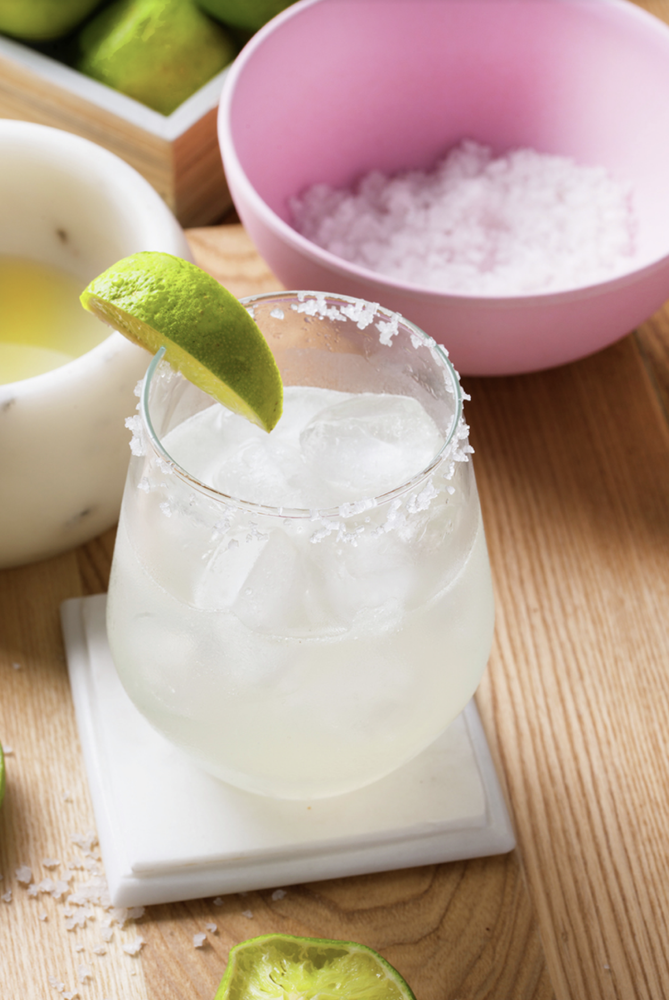
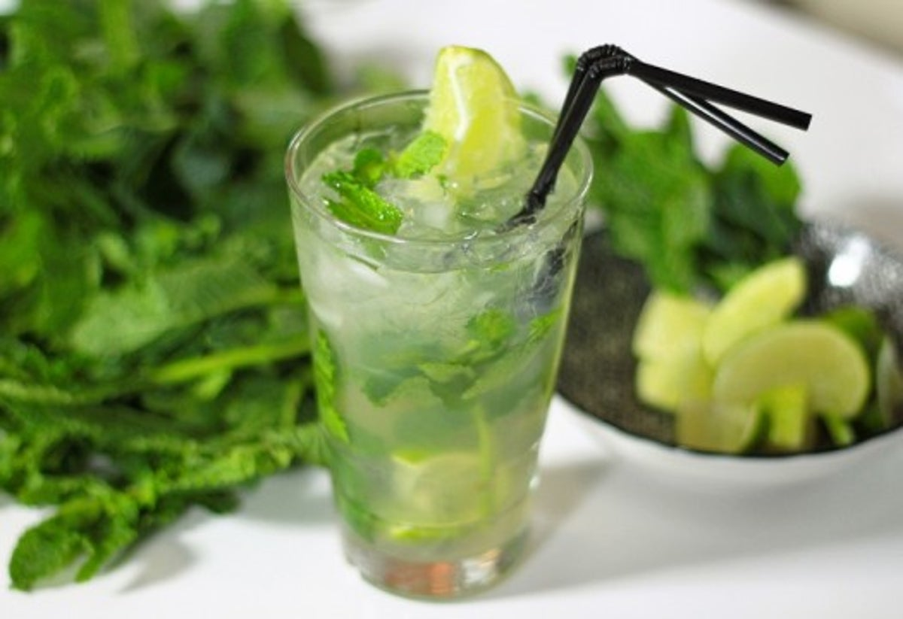
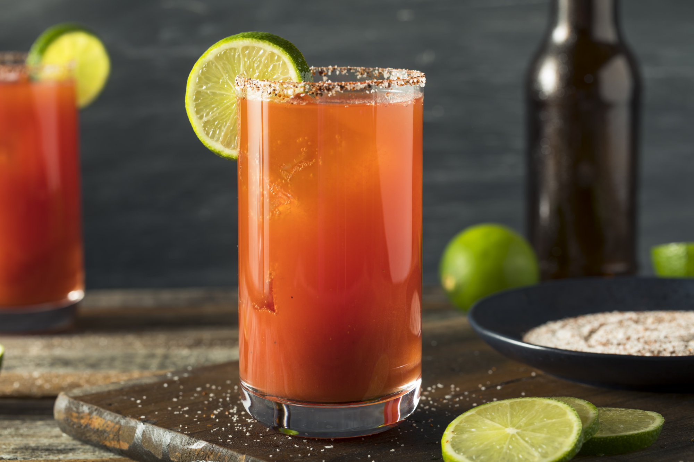

- MARGARITA
- 
- Ingredientes:
1/2 taza de Tequila
3/4 de taza de licor de naranja
1/2 taza de jugo de limón
1 limón verde cortado en rajas delgadas
2 cucharadas de azúcar
sal para escarchar
hielos
- PIÑA COLADA

- Ingredientes:
400 g piña troceada y congelada
150 mL leche de coco
1 yogur natural
130 g azúcar moreno
2 cucharadas de ron
250 g hielos
- MOJITO CUBANO
- 
- Ingredientes:
ron blanco
sifón (o agua con gas)
azúcar blanco
hierbabuena
lima
hielo
- MICHELADA
- 
- Ingredientes:
Cerveza (clara, obscura, a su gusto)
Limón (verde)
Sal
Salsas: salsa inglesa, jugo Maggi
Hielos (opcional)